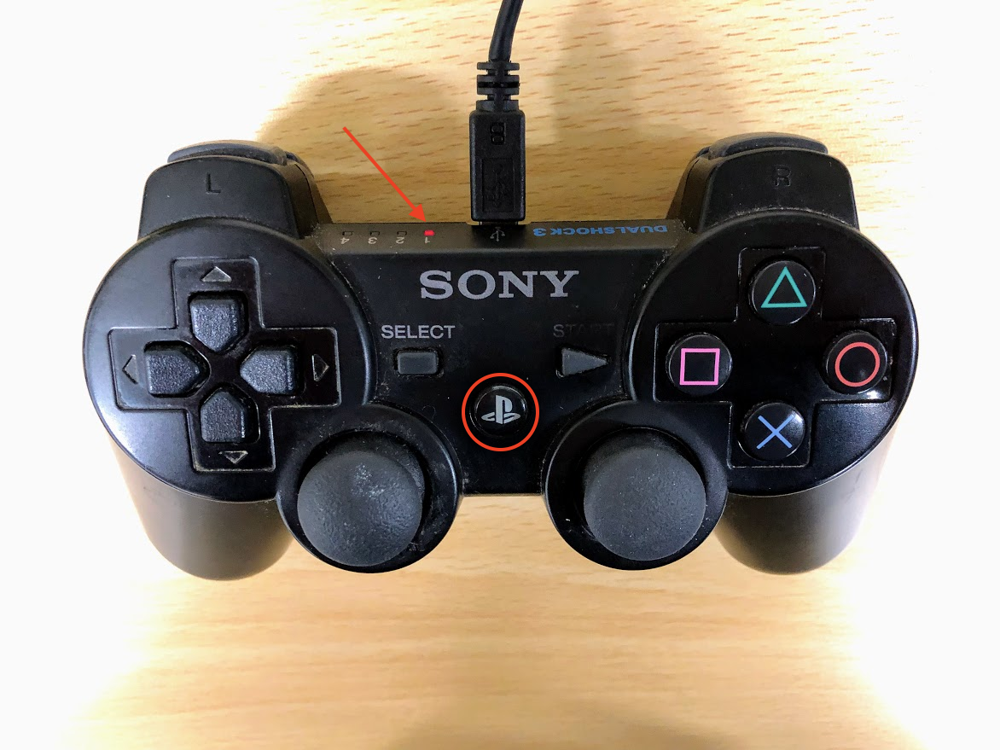

Joystick(PS3)
Donkey Carでは、SONY純正のPS3 Joystickで操作も可能です。
Warning
PS3 Joystickは、Thirdparty製は認識しない。
PS3 Joystickの認識
1 2 3 | sudo apt-get install bluetooth libbluetooth3 libusb-dev sudo systemctl enable bluetooth.service sudo usermod -G bluetooth -a pi |
1 2 | wget http://www.pabr.org/sixlinux/sixpair.c gcc -o sixpair sixpair.c -lusb |
PS3 JoystickをDonkeyCarにUSBで接続し、PS3ボタンを押します。

1 2 3 | sudo ./sixpair Current Bluetooth master: b8:27:eb:4d:b1:73 Setting master bd_addr to b8:27:eb:4d:b1:73 |
Bluetoothデバイスアドレスがでてくれば、成功。PS3 JoystickをDonkeyCarから切り離します。
1 2 | bluetoothctl [NEW] Controller B8:27:EB:4D:B1:73 donkeypi [default] |
1 2 | [PLAYSTATION(R)3 Controller]# agent on Agent registered |
PS3ボタンを押す
1 | [PLAYSTATION(R)3 Controller]# connect B8:27:EB:4D:B1:73 |
つながるまで繰り返す
1 2 3 4 5 | [PLAYSTATION(R)3 Controller]# trust B8:27:EB:4D:B1:73 [PLAYSTATION(R)3 Controller]# default-agent [PLAYSTATION(R)3 Controller]# quit |
1 | sudo reboot |
1 2 | ls /dev/input/js* /dev/input/js0 |
/dev/input/js0が見えれば成功。
1 | jstest /dev/input/js0 |
必要なパッケージの拡張
1 | pip install git+https://github.com/autorope/donkeypart_ps3_controller.git |
調整
1 2 | cd /home/pi/env/lib/python3.5/site-packages/donkeypart_ps3_controller vi __init__.py |
1 | from .part import PS3JoystickController |
に書き直す。
1 2 | cd ~/mycar vim manage.py |
1 2 3 4 5 6 7 8 9 10 11 12 13 14 15 16 17 18 19 20 | if use_joystick or cfg.USE_JOYSTICK_AS_DEFAULT:
print("Using joystick: ")
print(" throttle_scale=" + str(cfg.JOYSTICK_MAX_THROTTLE))
print(" steering_scale=" + str(cfg.JOYSTICK_STEERING_SCALE))
#print(" throttle_axis=" + str(cfg.JOYSTICK_THROTTLE_AXIS))
print(" auto_record_on_throttle=" + str(cfg.AUTO_RECORD_ON_THROTTLE))
#ctr = JoystickController(max_throttle=cfg.JOYSTICK_MAX_THROTTLE,
# steering_scale=cfg.JOYSTICK_STEERING_SCALE,
# throttle_axis=cfg.JOYSTICK_THROTTLE_AXIS,
# auto_record_on_throttle=cfg.AUTO_RECORD_ON_THROTTLE)
ctr = PS3JoystickController(
throttle_scale=cfg.JOYSTICK_MAX_THROTTLE,
steering_scale=cfg.JOYSTICK_STEERING_SCALE,
#throttle_axis=cfg.JOYSTICK_THROTTLE_AXIS,
auto_record_on_throttle=cfg.AUTO_RECORD_ON_THROTTLE
)
else:
# This web controller will create a web server that is capable
# of managing steering, throttle, and modes, and more.
ctr = LocalWebController(use_chaos=use_chaos)
|